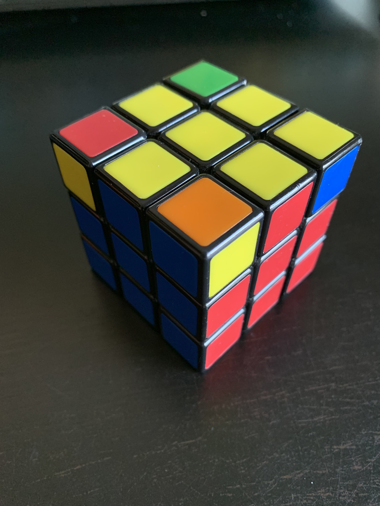
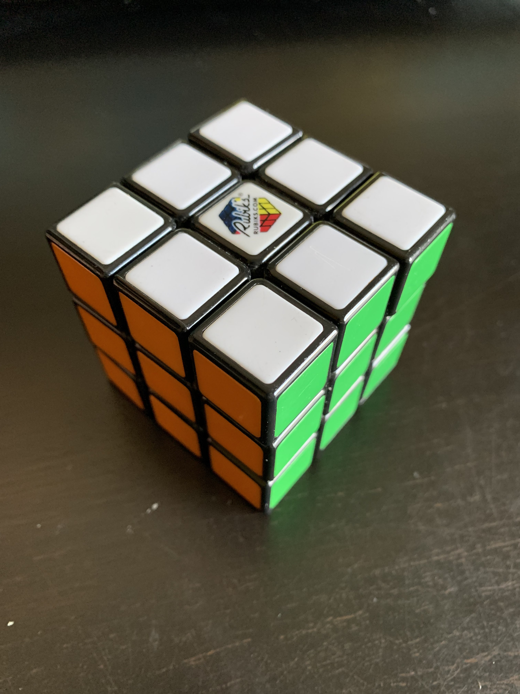

Alles in het blauw is een beweging van de kubus, zie "Algoritmes"
Stap 1: Maak gele kruis

Deze stap is een beetje ingewikkeld, je bewegingen hangen
af van de positie van de gele blokken vanboven.
Situatie 1 Hoek : f → Righty Alg → f'
Situatie 2 Punt : F → Righty Alg → F' + f → Righty Alg → f'
Situatie 3 Lijn : F → Righty Alg → F'
Nu zou je een geel kruis moeten uitkomen.
-
De grote "F" en kleine "f" zijn verschillende bewegingen,
je vindt ze beiden bij "Algoritmes".
Stap 2.1: Zet de middens goed
Nu ga je het bovenste vlak horizontaal draaien(U of U') tot
twee of meer aangrenzende middens dezelfde kleur hebben
als het blokje erboven. Als alles al goed zit hoef je stap 2
niet te doen.
Als de goede kanten tegover elkaar staan en niet grenzen
aan elkaar, doe dan : R→ U → R' → U → R → U' → U' → R'
Nu kan je naar stap 2.2
Stap 2.2: Zet de middens goed
Hou de kubus vast met één van de goede kanten aan de
achterkant en één rechts.
Doe nu R→ U → R' → U → R → U' → U' → R' .
Als je nu het bovenste vlak draait zouden alle middens op
de juiste positie moeten zitten.
Stap 3: Zet hoeken in juiste positie
Hier ga je moeten kijken naar alle kleuren die de blokken in
hoeken hebben, je zoekt naar een hoek die in de juiste
positie zit. Je vind dit door te kijken naar de kleuren,
kijk naar de 2 kleuren op het blokje en negeer het geel.
Als dat blokje tussen de middens van die 2 kleuren zit,
dan zit het op de juiste positie.
Als je een blokje vind die in de juiste positie zit, hou dit voor
je aan je rechterkant en herhaal tot alle hoeken goed zitten:
U → R → U' → L' → U → R' → U' → L
Als er geen blokje goed zit doe dan :
U → R → U' → L' → U → R' → U' → L
tot een blokje goed zit,kijk dan weer naar boven van de tekst
Stap 4: Los de kubus op!
Dit is de laatste stap, hou het witte vlak naar boven.
Hou een van de 4 zijvlakken voor je (niet wit en geel).
Doe het Righty Alg en na elke keer dat je het doet check de
onderkant of het goed zit(geel op de onderkant).
Als dit gelukt is draai je het onderste vlak (D)
één keer en doe je dit opnieuw. Doe dit voor 4 keer en
dan zou de kubus volledig gemaakt moeten zijn.
Bedankt voor uw aandacht!